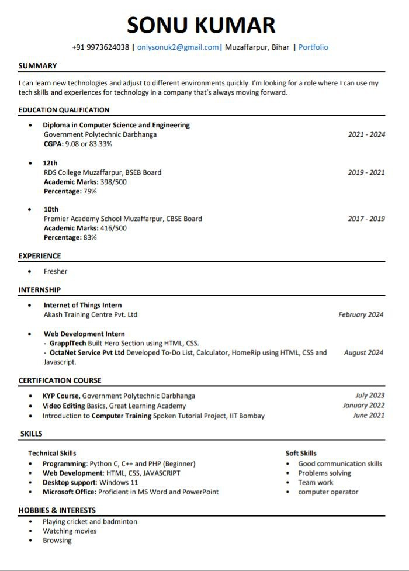

Welcome to Resume Maker
Create a professional resume in minutes. Choose from ATS-compliant templates to land your dream job!
For the best experience, use on a laptop or desktop.
Resume Templates

What is an ATS Resume?
An ATS (Applicant Tracking System) Resume is designed to pass through automated recruitment software used by employers. With our templates, your resume will:
- Be correctly formatted for ATS scanners
- Include essential keywords to match job descriptions
- Have a clean and professional layout